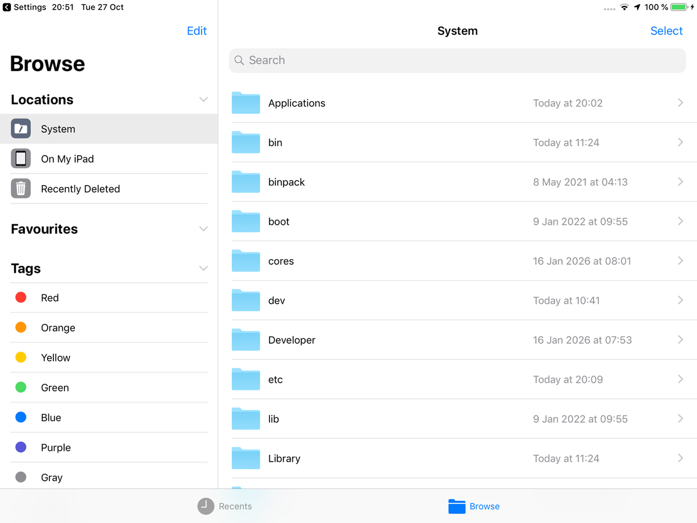
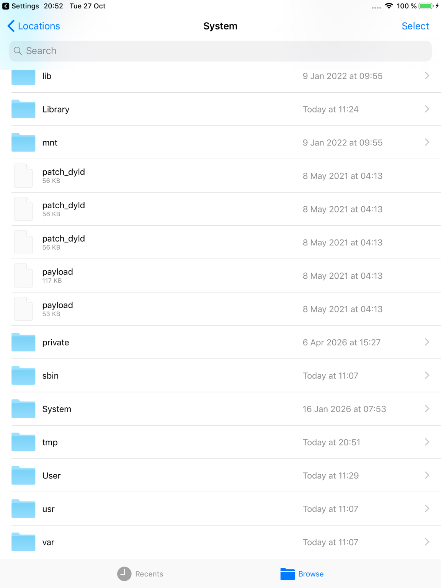
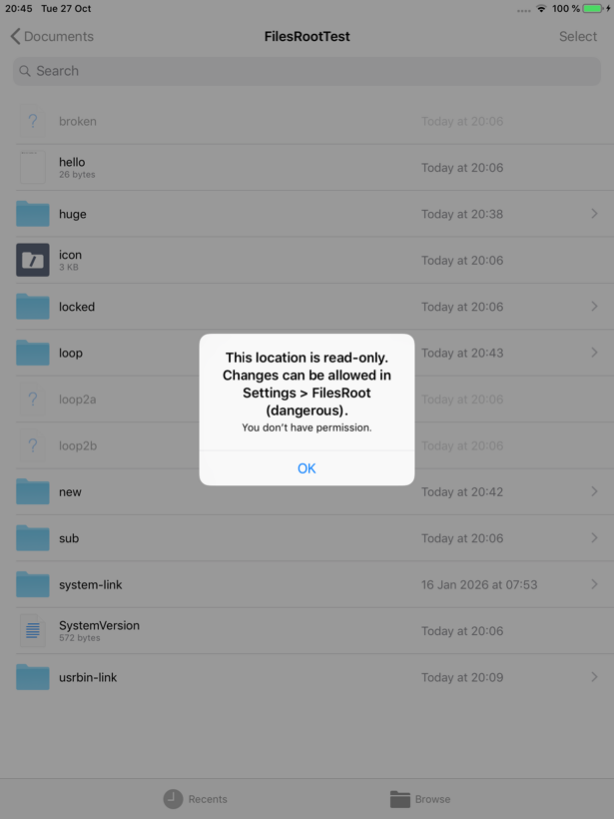
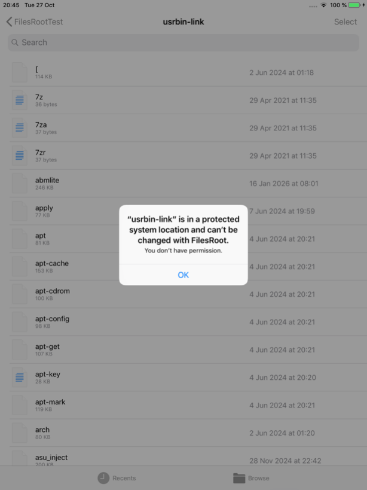
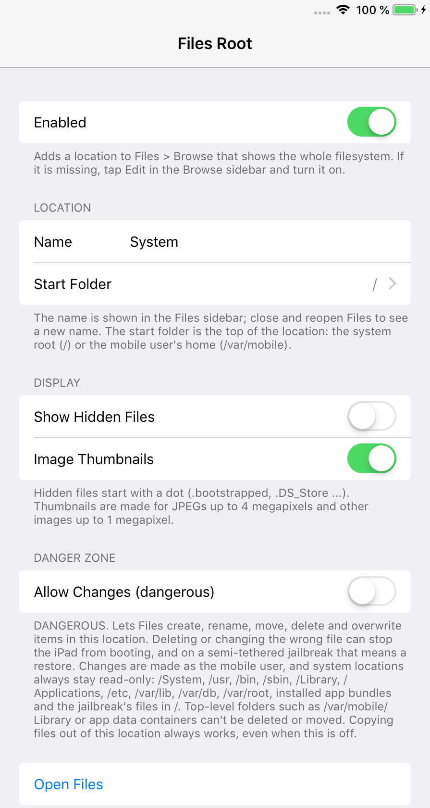

FilesRoot (iOS 12)
FilesRoot adds a System location to the Files app sidebar that starts at /, the root of the filesystem. Look around, preview files with Quick Look, copy files out to On My iPad, and open or share them with other apps, all without a separate file manager.
It is read-only by default. Changes can be allowed in Settings > Files Root, but system locations such as /System, /usr, /Library, /Applications, /etc and the jailbreak's own files always stay read-only, the filesystem layout can't be deleted or moved, and links can't be used to get around this. FilesRoot works as the mobile user, never as root. Deleting in this location is permanent.
If System is missing after installing, open Files > Browse, tap Edit and turn it on.
Screenshots





Features
- A "System" location in Files, starting at / or at /var/mobile, with a name you can change
- Quick Look previews, copying files and folders out, sharing and opening in other apps
- Image thumbnails with strict memory limits
- Optional hidden files
- Also works in the Files picker that other apps show (Open, Save to Files)
- Read-only by default; an optional "Allow Changes (dangerous)" switch with a permanent list of protected system locations
Settings
Settings > Files Root:
- Enabled: shows or hides the location in Files.
- Name: the name in the Files sidebar (default "System"). Reopen Files to see a new name.
- Start Folder:
/(default) or/var/mobile. - Show Hidden Files (off): shows names that start with a dot.
- Image Thumbnails (on): thumbnails for images, within strict size limits.
- Allow Changes (dangerous) (off): lets Files create, rename, move, delete and overwrite items, except in protected system locations. Deleting the wrong file can stop the device from booting, and deleting here is permanent.
- Open Files: opens the Files app.
Compatibility
- Tested on iPad mini 2, iOS 12.5.8 (checkra1n + odysseyra1n / libhooker)
- Expected to work on iOS 12.x, on iPhone as well as iPad (tested on iPad)
- Works alongside FilesArchiver and FilesExtensions
Changelog
Version 1.0.2
- First public release.
- Settings: the entry is now called Files Root, like Files Archiver and Files Extensions, and the thumbnail limits are described correctly.
- Safety and robustness fixes from a full review: thumbnails are limited by image size, so huge or unusual images can't crash the location.
- Protections: top-level folders, app data containers and every File Provider storage folder can't be deleted or moved; hard-linked files are never overwritten.
- Links: deleting a link removes only the link, and paths are resolved before they are checked.
- Free space and limits: copying a folder out checks free space and stops at 20,000 items or 4 GB.
- Items only root can read are greyed out, and sizes update while a folder is open.
Version 1.0.1
- Test versions 1.0.0 and 1.0.1 (not published).
Information
| Version | 1.0.2 |
| Developer | itsAllexB |
| Size | 55 KB |
| License | GPL-3.0 |
| Source code | GitHub |
| Problems | Report an issue |
Unofficial. Not affiliated with or endorsed by Apple.